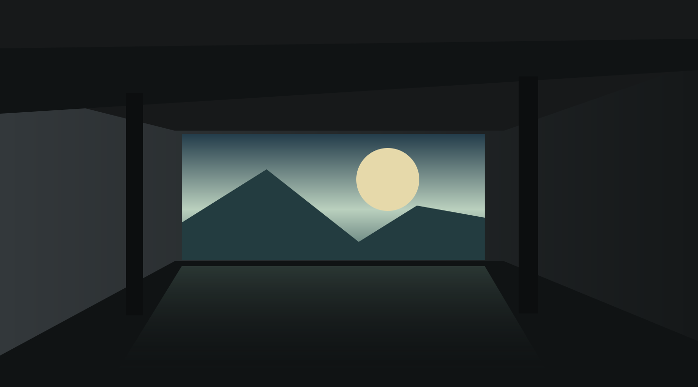

Original light studies
Four chapters of a working life
Screening room · Level 1
About
Software, systems, and the person behind them.
Return to floorLevel 1 / About
Afterlight
Floors

Original light studies
Four chapters of a working life
Screening room · Level 1
Software, systems, and the person behind them.